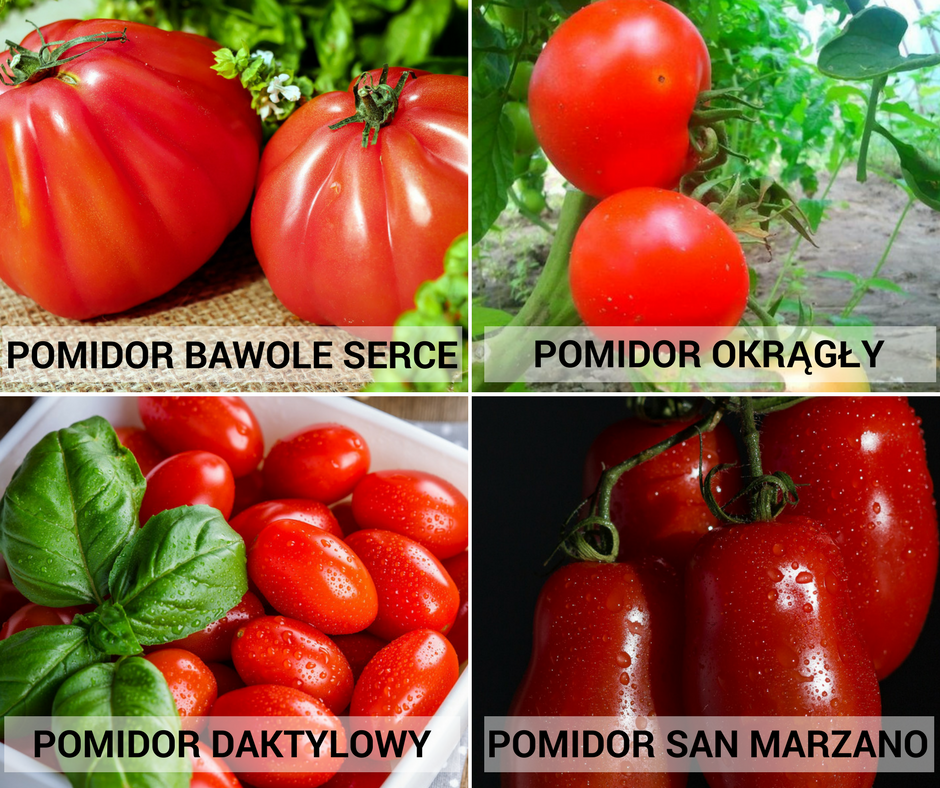

Polecane pomidory
Tutaj poniżej wstawiam moje ulubione pomidory, mniam mniam

Rodzaje pomidorów
- drobnoowocowe
- średnioowocowe
- wielkoowocowe
Film o pomidorach
A tutaj jest Fur Elise Beethoven

Strona poświęcona pomidorom
Tutaj poniżej wstawiam moje ulubione pomidory, mniam mniam
A tutaj jest Fur Elise Beethoven